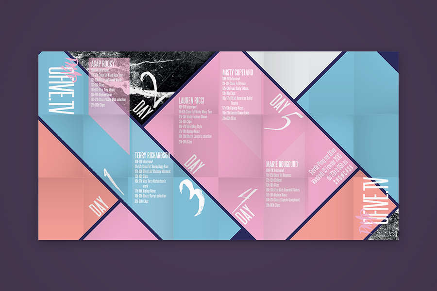
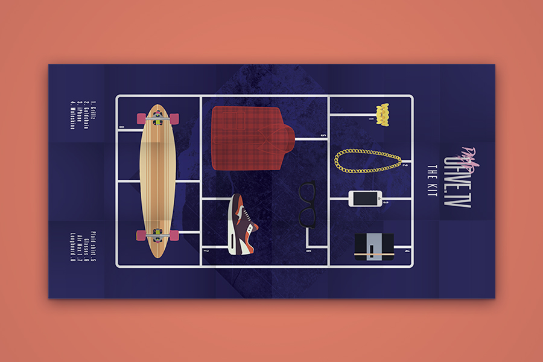
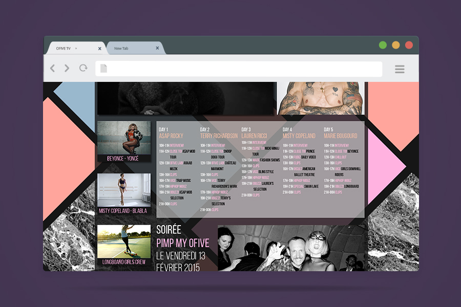
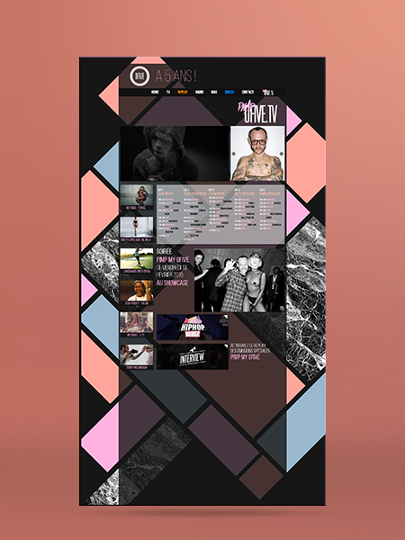

5 ans OfiveTV
.direction artistique
.webdesign
.motion
Création pour les 5 ans de la chaîne OfiveTV d’un évènement et de son identité, basé sur 5 artistes issus de la musique, de la danse, du design, du sport et de l’art.
Création d’une affiche, Z Card, pack presse et page web dédiée.